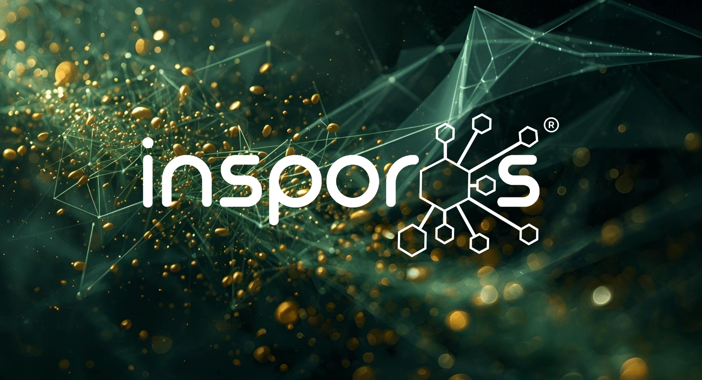

Engineering Work Experiences
Explore my engineering work experiences as well as the skills I learned and applied along the way.
SMARTer Growth Research Lab
WorkStudy Research Assistant
UBC's SMARTer Growth Lab (Dr. Lovegrove) is building zero-emission rail using hydrogen, batteries, and smart electrification instead of diesel. Their core idea—Hydrail—uses hydrogen fuel cells to power trains: clean, energy-dense, and cheaper than full electrification.
- Hydrail 1: Canada's first hydrogen rail prototype
- OVER PR: Vision for a hydrogen rail line across the Okanagan (feasible by 2039)
- Hydrogen Goat: Converting existing diesel locomotives to hydrogen at scale
My Work
- Programmed CAN bus communication protocol for hydrogen train for system control in Python and MATLAB
- Communicated/cooperated with different team departments (mechanical, electrical, software, etc.) to complete tasks
- Created CAD files for designing fuel cell piping system for train
- Created reports to educated team members about new developments
Links:


Insporos Technologies Inc.
R&D Precision Mechanical Engineer
Insporos Technologies is a Vancouver-based agtech startup (founded 2023) developing AI-powered seed sorting systems that identify unhealthy or diseased seeds before planting. Using a unique metabolomics-based, non-destructive screening method, their technology helps greenhouses reduce waste, prevent pathogen spread, and significantly improve crop yields.
- Combines AI + proprietary hardware + metabolomics (rare combo in agtech)
- Detects seed-borne diseases before planting (huge cost saver)
- Targets a major pain point: 30-50% greenhouse waste
- Potential savings: up to $10M/year per facility
- Award-winning (Global AgTech Summit, Pacific Ag Show)
- Backed by Genome BC + top Canadian startup programs
- Vision: move toward predictive, data-driven growing (“Grow Predictably”)
My Work
- Analyzed system performance and optimized a high-throughput scanning platform to improve efficiency and reliability
- Performed circuit simulations in LTSpice to verify component safety, optimize efficiency, and mitigate potential failure modes
- Engineered autonomous, high-precision motion control for a system using stepper motors and commercial motion hardware (e.g., Zaber Technologies)
- Developed CAD models to enable rapid prototyping and efficient troubleshooting of system components
- Utilized microcontrollers (Arduino) and Raspberry Pi for autonomous processing and system control
- Designed high-speed, mixed-signal PCBs in KiCad with attention to signal integrity, layout constraints, and reliability
Links:
SMARTer Growth Research Lab
WorkStudy Research Assistant
UBC's SMARTer Growth Lab (Dr. Lovegrove) is building zero-emission rail using hydrogen, batteries, and smart electrification instead of diesel. Their core idea—Hydrail—uses hydrogen fuel cells to power trains: clean, energy-dense, and cheaper than full electrification.
- Hydrail 1: Canada's first hydrogen rail prototype
- OVER PR: Vision for a hydrogen rail line across the Okanagan (feasible by 2039)
- Hydrogen Goat: Converting existing diesel locomotives to hydrogen at scale
My Work
- Programmed CAN bus communication protocol for hydrogen train for system control in Python and MATLAB
- Communicated/cooperated with different team departments (mechanical, electrical, software, etc.) to complete tasks
- Created CAD files for designing fuel cell piping system for train
- Created reports to educated team members about new developments
Links: